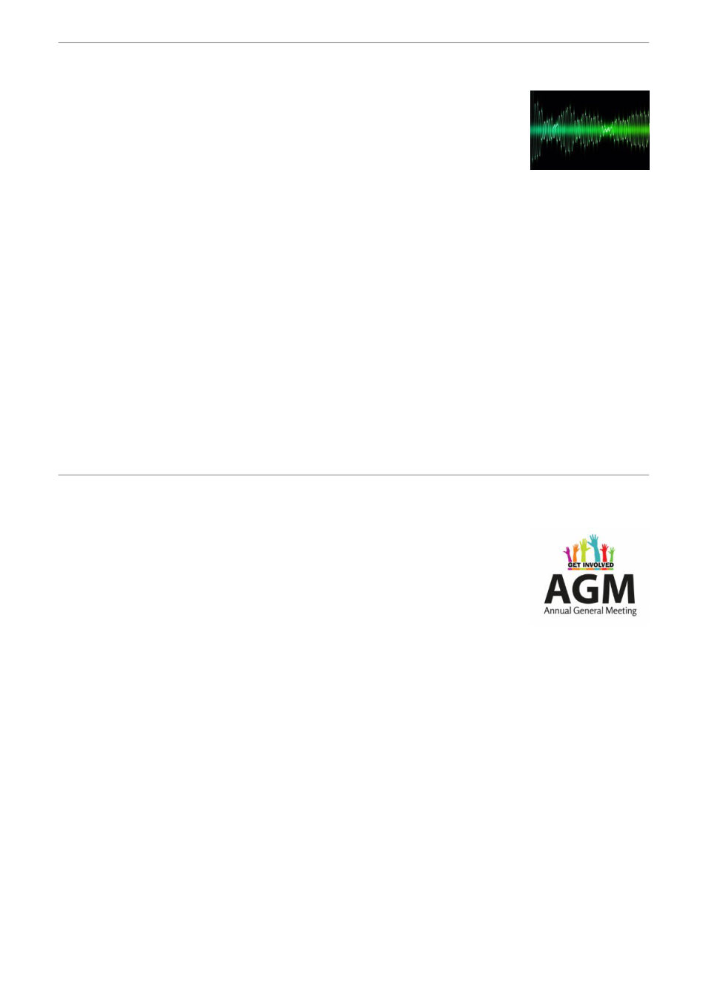

Geelong Airwaves Buzzing With Varroa Awareness!
The Geelong Beekeepers Club is delighted to share that Geelong
Broadcasters Pty Ltd have one agian generously offered to help raise
awareness about Varroa mite across Geelong and the Surf Coast.
Throughout July, Geelong Broadcasters will air our community service
announcement three times a day on 93.9 Bay FM
The slighly updated announcement encourages the public to stay informed and be vigilant:
“If you keep bees in your backyard, please stay alert and informed. With Varroa Mite
now detected in the Greater Geelong region, it's now even more important to link in with
the Geelong Beekeepers Club. Learn, share, and connect with a community of
beekeepers facing the same challenges.”
This is an excellent opportunity for the club and the wider beekeeping community to boost
awareness at a crucial time. It is essential that all beekeepers, whether members or non‑members,
registered or unregistered, have access to the information and resources needed to help combat
Varroa.
Listen to the radio advert here and help spread the message.
As always our best voice is though our friends, family, neighbours, and anyone who keeps
bees. The more people who understand the threat of Varroa, the better protected we all are.
Annual General Meeting Announcement
A reminder that our important Annual General Meeting (AGM) will be held in
August where we present the annual report, review the financials, and elect
our office bearers for the year ahead.
We encourage all members to consider nominating for an Office Bearer or
Committee position. Being part of the committee is a meaningful way to
contribute to the direction and smooth running of the club. All positions are
well supported, and our website takes care of much of the administrative workload, such as new
member registrations, emails, payments and more, so no one is left carrying things alone.
Structure and Duties of Committee Members.pdf | GBC Committee Nomination Form.pdf
Please note that nominees must be over 18 and financial members of the club. The committee
meets on the first Thursday of each month from 7 PM to 9 PM.
If you’re interested in volunteering or would simply like to understand what’s involved, please speak
with any current committee member. who are more than happy to walk you through the roles so
you can make an informed decision.
The club holds Association Liability Coverage, which includes elements of professional indemnity
and management liability. This protects the organisation, office bearers, and volunteers against
legal costs and damages that may arise from allegations of misconduct, breach of duty,
mismanagement and similar matters.
Community clubs only thrive when people step up. No committee means no club.
Nathan Whitford, President, Geelong Beekeepers Club